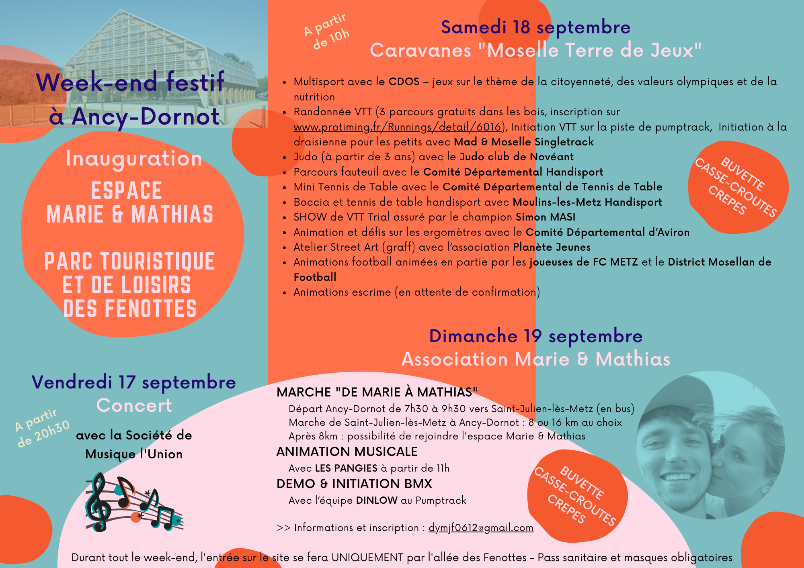

Communication évènementielle

{kind=link}

{kind=link}


En détail...
- CategorieInfographie & Multimédias
- Contexte Conception d'une gamme complète de supports visuels pour promouvoir les événements municipaux et valoriser la vie locale dans le cadre de la stratégie de communication territoriale annuelle (commémorations, fêtes, manifestations culturelles, événements associatifs)
- Technologie Canva, Adobe Illustrator
- Mon rôle Conception graphique respectant la charte institutionnelle Création d'identités visuelles spécifiques à chaque événement Mise en page et hiérarchisation de l'information événementielle Adaptation des messages selon les publics cibles (familles, seniors, jeunes) Coordination éditoriale pour optimiser l'impact promotionnel Publication coordonnée sur les différents canaux de diffusion
- Défis relevés Création d'une ligne graphique attractive respectant les codes institutionnels Hiérarchisation efficace des informations pratiques (date, lieu, programme) Adaptation des messages selon la nature des événements (solennité vs festivité) Création d'un système visuel modulable et évolutif Gestion des contraintes budgétaires pour l'impression Coordination des délais de production avec les calendriers événementiels Conformité aux codes de communication publique
- Impact territorial Renforcement de l'attractivité et du dynamisme perçu de la commune Amélioration de la cohésion sociale par la promotion de la vie locale Professionnalisation de l'image événementielle de la collectivité Valorisation du patrimoine culturel et des traditions locales
- Collaboration Coordination avec les organisateurs d'événements et associations partenaires Validation éditoriale et graphique avec les élus référents Interface avec les prestataires techniques (impression, affichage) Synchronisation avec la stratégie de communication digitale
- Résultats Collection de 10+ supports événementiels par an avec identité visuelle cohérente Reconnaissance immédiate des communications officielles par les habitants Système graphique modulable permettant une production efficace et économique Renforcement de l'image dynamique et accessible de la collectivité